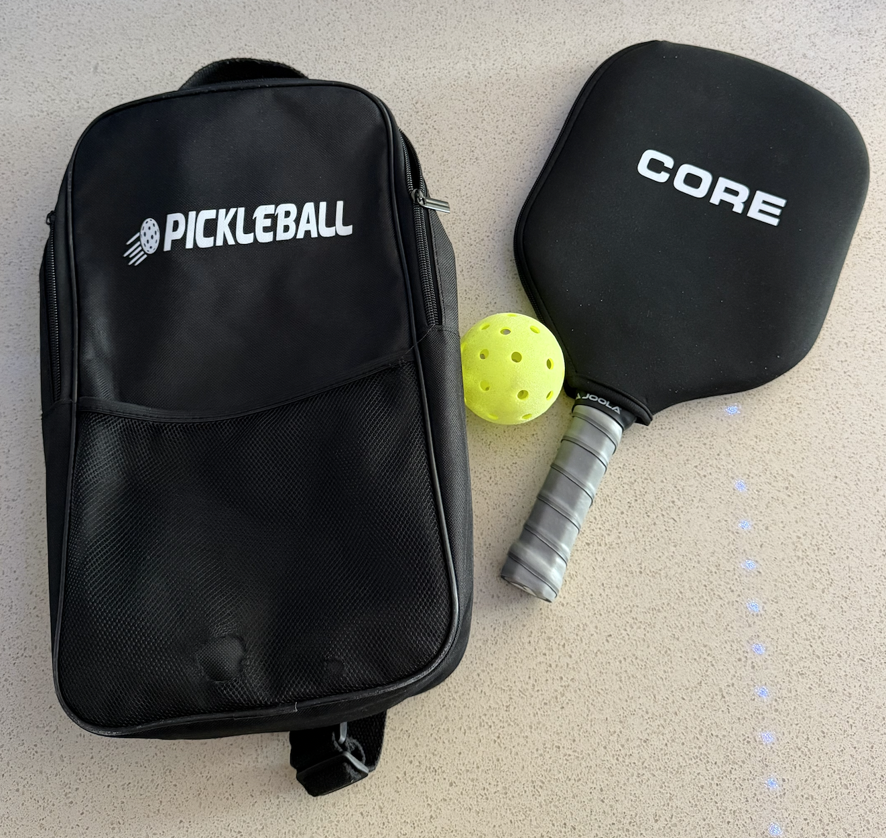
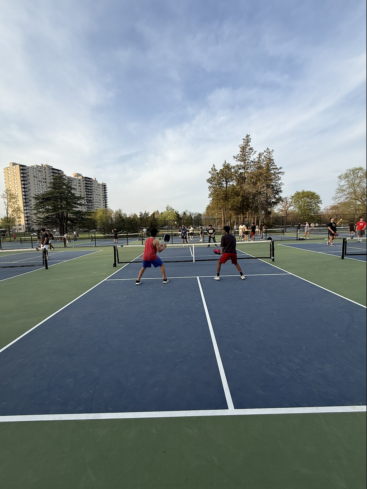

Pickleball Pictorial
Pickleball is a fun activity because it mixes competition with a really social atmosphere. People can play seriously and still have a good time with friends at the same time, which is one of the reasons the sport has become so popular. The game also has a strong visual side because the paddles, balls, nets, and courts all help shape the experience. This page shows both the equipment side and the gameplay side of pickleball through two different image groups. Together, these groups help show why pickleball is both a sport and a social activity.
Gear and Equipment
Images in group: 6
Main focus: paddles, balls, and court equipment
Main idea: the gear shapes how the sport looks and feels
These images are grouped together because they focus on the objects that define the sport visually. Paddles, balls, nets, and gear bags are often the first things people notice about pickleball, so this group supports the review page by connecting the sport to its equipment. Together, these images show the setup and materials that shape the experience of playing. They also show that pickleball is simple to start, but the type of equipment you use can still affect how you play. Even small details like paddle material, grip, and ball type can change control, power, and comfort.





Paddle Material Ratings
| Material Type | Power | Control | Beginner Rating |
|---|---|---|---|
| Wood | ★☆☆☆☆ | ★★☆☆☆ | ★★☆☆☆ |
| Fiberglass | ★★★☆☆ | ★★★☆☆ | ★★★★★ |
| Graphite | ★★★☆☆ | ★★★★☆ | ★★★★☆ |
| Carbon Fiber | ★★★★☆ | ★★★★★ | ★★★★☆ |
I rated composite paddles highest for beginners because they usually give a really good balance of power, control, and comfort and the paddles most people like me start to play with. Graphite and carbon fiber paddles can perform really well too, but they are often more useful once a player starts paying attention to things like spin, precision, and shot placement. Wood paddles are cheaper, but they usually feel heavier and less comfortable for longer games. This table helps explain why equipment matters and why some paddle materials are more beginner-friendly than others. The rating are also listed in the order for pricing so, the wooden paddles being the cheapest and the carbon fiber being the most expensive.
Friends, Courts, and Play
Images in group: 6
Main focus: play, community, and court culture
Main idea: pickleball is social as much as it is athletic
These images are grouped together because they focus on the social side of pickleball. Instead of objects, this group highlights people, movement, and shared court spaces. It connects with the second review by showing why pickleball works so well as a group activity. These images capture the atmosphere of the game and how it brings people together. They also show how the sport can be both casual and competitive depending on who is playing. Even when games are intense, there is still a strong social side that makes people want to come back and play again.



Ways People Usually Play
| Type of Play | Social Level | Competition Level | Accessibility |
|---|---|---|---|
| Casual Doubles | ★★★★★ | ★★★☆☆ | ★★★★★ |
| Singles | ★★☆☆☆ | ★★★★★ | ★★★☆☆ |
| Practice Sessions | ★★★☆☆ | ★★☆☆☆ | ★★★★★ |
| Tournament Play | ★★★☆☆ | ★★★★★ | ★★☆☆☆ |
I rated casual doubles highest in social level because that is the format where people usually talk the most, rotate in and out, and just enjoy playing together. Singles is usually more intense and physically demanding, so it feels more competitive than social. Practice sessions are useful because they help players improve without the pressure of a real match. This table shows that pickleball can fit different moods, from relaxed games with friends to more serious competition.